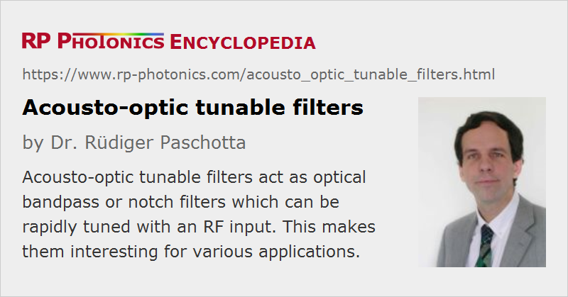

Acousto-optic Tunable Filters
Acronym: AOTF
Definition: acousto-optic devices which can be used for filtering light, controlled with an RF input
German: akusto-optische abstimmbare Filter
How to cite the article; suggest additional literature
Author: Dr. Rüdiger Paschotta
An acousto-optic tunable filter (AOTF) is a kind of optical filter which is based on a kind of acousto-optic modulator. Wavelength tuning is electrically controlled through the applied RF frequencies.
Operation Principle
The basic operation principle is explained in the following. If a sinusoidal (fixed-frequency) RF input signal is applied to the modulator, diffraction is possible only in a narrow range of optical frequencies, where a phase matching condition involving both optical and acoustic waves is fulfilled. Looking at the diffracted light, one obtains a bandpass filter, while the non-diffracted light provides a notch filter.
With RF waves of different frequencies, one can address different regions of optical frequencies. One may, for example, use an optical input from an argon ion laser emitting on different laser lines, and with the tunable filter one can transmit just one of those lines at a time.
It is also possible to use any superposition of different RF frequencies in order to obtain diffraction for different optical frequencies. The diffraction efficiency at any wavelength can be controlled via the corresponding RF power.
Depending on the design, a AOTF may work over an optical wavelength range which is hundreds of nanometers wide. Other devices are optimized for high resolution in a narrower wavelength range. Some of them also work with ultrashort pulses.
Acousto-optic Filter Designs
Because the requirements for different applications are quite diverse, different types of acousto-optic filters have been developed.
Some devices use a collinear interaction between light and sound waves. For example, one may use a tellurium oxide (TeO2) crystal, having a high acousto-optic figure of merit, and apply acoustic shear waves (i.e., with the oscillation perpendicular to the beam direction). The diffracted light will then have a polarization direction which is perpendicular to that of the linearly polarized input light. It is thus easy to isolate the diffracted light after the device with a polarizer. Such devices have a small acceptance angle, i.e., they work only with an appropriately aligned laser beam having a limited amount of beam divergence.
There are also tunable filters based on a non-collinear geometry. These typically have a much larger acceptance angle, but only a quite limited interaction length, so that the diffraction efficiency is correspondingly reduced, or higher RF powers are required.
Some devices can work with an unpolarized input, exploiting the birefringence of the used crystal material.
Different filter designs can differ greatly in terms of various performance parameters, for example
- the addressable range of optical wavelengths,
- the spectral resolution and quality of sidelobe suppression, and
- the diffraction efficiency and required RF power.
The requirements of the used RF driver also depend very much on the device design and its application.
Applications of Acousto-optic Tunable Filters
A widespread application of AOTF is in multispectral imaging, e.g. in the form of laser microscopy. The essential advantage of this technology is that very rapid scanning (e.g. compared with mechanically controlled spectrometers) is possible, allowing for a fast acquisition of microscope images with spectral information. Also, the optical setup can be quite compact.
For terrestrial observations with spectral resolution for monitoring the status of plants, for example, one may exploit the large field of view and high spatial resolution of a non-collinear filter. It is also possible to acquire additional information on the polarization of light (spectropolarimetry).
There are other applications in laser spectroscopy. For example, one may use an AOTF for selecting certain wavelengths of an excitation laser and another AOFT for spectrally filtering fluorescence light which the excitation light has caused on some sample.
Some wavelength-agile wavelength-tunable light sources use an AOTF.
The ability to rapidly select a certain wavelength region can also be used for optical fiber communications based on wavelength division multiplexing.
Suppliers
The RP Photonics Buyer's Guide contains 11 suppliers for acousto-optic tunable filters. Among them:
Questions and Comments from Users
Here you can submit questions and comments. As far as they get accepted by the author, they will appear above this paragraph together with the author’s answer. The author will decide on acceptance based on certain criteria. Essentially, the issue must be of sufficiently broad interest.
Please do not enter personal data here; we would otherwise delete it soon. (See also our privacy declaration.) If you wish to receive personal feedback or consultancy from the author, please contact him e.g. via e-mail.
By submitting the information, you give your consent to the potential publication of your inputs on our website according to our rules. (If you later retract your consent, we will delete those inputs.) As your inputs are first reviewed by the author, they may be published with some delay.
See also: acousto-optic modulators, optical filters, wavelength-tunable light sources
and other articles in the category photonic devices
|  |
If you like this page, please share the link with your friends and colleagues, e.g. via social media:
These sharing buttons are implemented in a privacy-friendly way!